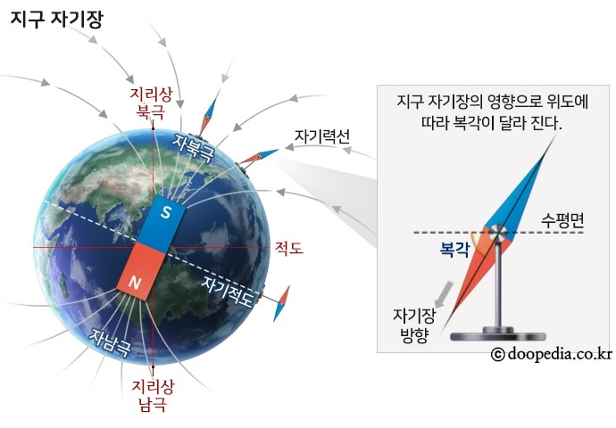

지구와 지구 주위에 나타나는 자기이며, 지구자기가 영향을 끼치는 영역을 지구자기장 또는 지자기장(地磁氣場)이라고 한다. 정확한 생성원인은 알려져 있지 않으며 고온의 녹은 철로 이루어진 외핵의 대류운동으로 설명하는 학설이 지배적이다. 전기적으로 편극된 유체가 자기장 내에 운동하면 전자기유도현상에 의해 전류가 발생하며, 이로 인한 새로운 자기장이 발생한다. 이러한 자기여기적(自己勵起的)인 자기장 생성이론을 다이너모(dynamo) 이론이라고 한다. 지구자기장은 지구 중심 부근에서 막대자석을 지구자전축 방향으로 놓은 쌍극자자기장 형상을 하고 있다. 지구표면에서의 지구자기는 이러한 쌍극자자기장을 따르는 벡터값을 가지며 이를 편각(지표면을 기준으로 북으로부터 동으로 기울어진 각), 복각(수평면에서 아래로 기울어진 각)의 방향성분과 자기장의 세기를 나타내는 전자기력의 세 가지 성분으로 표현한다. 중력에서의 지오이드(geoid)와 마찬가지로 지구자기도 지각내부의 강자성영역에 의해 쌍극자자기장으로부터 왜곡된 지구자기이상이 나타난다.
